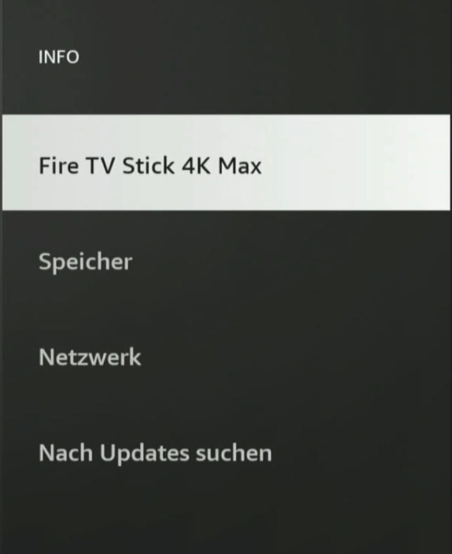
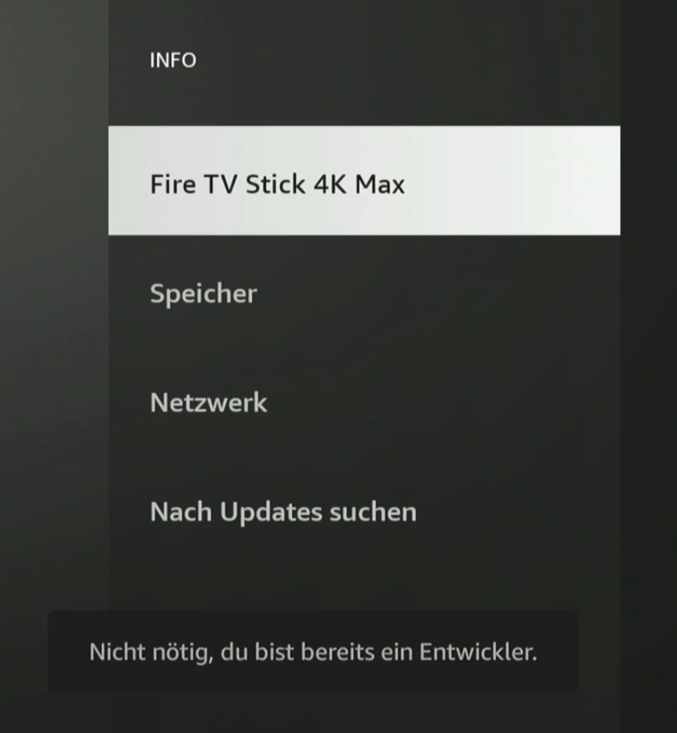
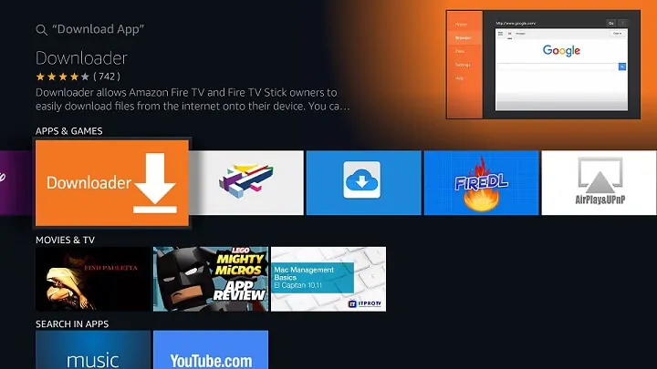
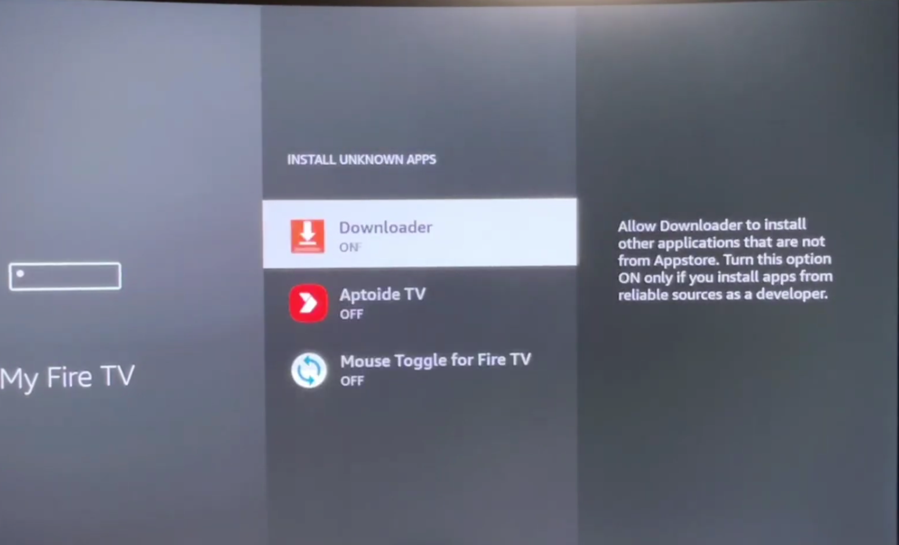

Bevor du startest
- Fire TV Stick ist eingeschaltet und du bist im Startmenü
- Internetverbindung ist aktiv
- Du machst nur das, was du wirklich brauchst (keine dubiosen Quellen)
Video
Wenn das Video nicht lädt: Video herunterladen
1
SCHRITT 1: In die Einstellungen
Wir gehen ins Einstellungsmenü.
- Fire TV Stick einschalten
- Im Startbildschirm oben rechts auf das Zahnrad (⚙️ Einstellungen) drücken
2
SCHRITT 2: Entwickleroptionen finden
Jetzt prüfen wir, ob die Entwickleroptionen schon da sind.
- Mein Fire TV öffnen
-
Siehst du „Entwickleroptionen“?
JA: Öffnen und weiter zu Schritt 4.
NEIN: Dann jetzt freischalten 👇 (weiter mit Abschnitt darunter)
Entwickleroptionen freischalten (falls sie fehlen)
- Mein Fire TV → INFO
-
Markiere deinen Fire TV Stick (z. B. Fire TV Stick 4K)

- Drücke auf der Fernbedienung 7× schnell OK
-
Meldung erscheint: „Du bist jetzt Entwickler“

- Zurück → jetzt sind Entwickleroptionen sichtbar
4
SCHRITT 4: Downloader installieren
Wir holen die App „Downloader“ aus dem Store.
- Zurück zum Startbildschirm
- Suche öffnen
-
Nach Downloader suchen (oranges Logo)

- Installieren
- Downloader öffnen
5
SCHRITT 5: Downloader erlauben
Berechtigungen bestätigen, dann Code eingeben und installieren.
- Falls eine Meldung kommt: Zulassen / Erlauben / OK → alles bestätigen
-
Code eingeben:
4382097 - Download starten
-
Installieren → ggf. leitet er euch zu den Einstellungen, dort dann DOWNLOADER zulassen

- Dann ggf. nochmal Installieren klicken
- Öffnen → Anmeldedaten eingeben → alles zulassen (WICHTIG)
✅ FERTIG
Wenn alles geklappt hat, läuft die App – und Sideload ist aktiv.